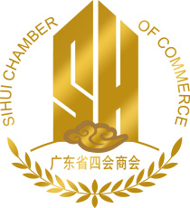
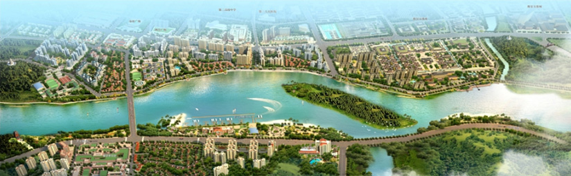

广东省四会商会简介

广东省四会商会是2014年6月13日由广东省民间组织管理局批准成立的合法商会机构，
是以广东省内的四会籍企业、四会籍工商界精英人士为主体的商界组织。其主要目的：
为在广东省内的四会企业和四会籍的企业家提供服务，密切企业与政府的联系，维护
在广东的四会企业和四会籍的企业家的合法权益，引导会员企业守法经营、自觉维护
正常的市场经济秩序；更好地为广东以及四会经济发展和社会进步做出贡献。
目前在广东各地经商投资创办企业和务工的四会籍人士有数万人，分布在广东各地的
各行各业，一大批四会籍创业者正朝着规模化、品牌化、国际化的方向发展。随着在
广东各地打拼发展的四会乡亲日益增多，建立商会是在粤各地奋斗的四会籍人士多年
的愿望和共同心声。
商会将以“打造沟通桥梁，为家乡经济建设服务；打造服务平台，为会员服务；打造合作平台，促进经济发展；打造商会品牌，增强凝聚力和影响力”为成立的宗旨和目的，秉承“以服务促合作，以合作促发展，以发展促服务”的可持续发展模式，社团活动地域拟在广东省内，拟初步在广东省内依托商会平台，立足四会，以项目为纽带，积聚生产要素，促进会员企业的强强联合，实现规模化经营，进一步壮大会员的综合经济实力。商会还将整合资源，抱团发展打造商会和企业品牌，推动企业集群化发展。商会还将充分发挥桥梁纽带作用，努力配合协助家乡政府做好招商引资工作，大力支持和促进家乡经济建设，树立商会品牌，为同乡和家乡服务。
